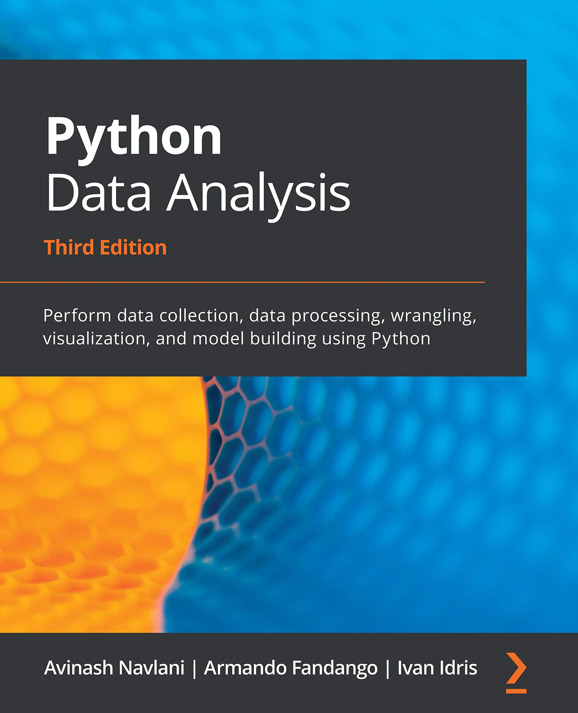

3Python
ACTL3143 & ACTL5111 Deep Learning for Actuaries
Dr Patrick Laub
Data Science & Python
About Python

It is general purpose language
Python powers:
- Spotify
- Netflix
- Uber
- Reddit…
Python is on Mars.
Stack Overflow 2021 Dev. Survey
- Python is 3rd most popular language
- Python is the most wanted language
- In ‘Other frameworks and libraries’, they note that “several data science libraries for Python make strong showings”.

Github’s 2021 State of the Octoverse

Top languages over the years
Source: Kaggle (2021), State of Machine Learning and Data Science.
Python and machine learning
…[T]he entire machine learning and data science industry has been dominated by these two approaches: deep learning and gradient boosted trees… Users of gradient boosted trees tend to use Scikit-learn, XGBoost, or LightGBM. Meanwhile, most practitioners of deep learning use Keras, often in combination with its parent framework TensorFlow. The common point of these tools is they’re all Python libraries: Python is by far the most widely used language for machine learning and data science.
Source: François Chollet (2021), Deep Learning with Python, Second Edition, Section 1.2.7.
Python for data science
In Leganto
Google Colaboratory

An example notebook in Google Colaboratory.
Python Data Types
Variables and basic types
Shorthand assignments
If we want to add 2 to a variable x:
Same for:
x -= 2: take 2 from the current value ofx,x *= 2: double the current value ofx,x /= 2: halve the current value ofx.
Strings
and & or
help to get more details
f-strings
Converting types
Quiz
What is the output of:
True and FalseWhat would you add before line 3 to get “True and True”?
Collections
Lists
Slicing lists
A common indexing error
TypeError: slice indices must be integers or None or have an __index__ methodEditing lists
['Coffee', 'Cake', 'Sleep', 'Gadget']None
Tuples (‘immutable’ lists)
<class 'tuple'>
3'Rainy'Dictionaries
'+61412 456 789'{'Patrick': '+61412 456 789', 'Coffee shop': '+61400 000 000'}Quiz
4 and 5Control Flow
if and else
The weird part about Python…
IndentationError: expected an indented block after 'else' statement on line 3 (2212277638.py, line 4)Warning
Watch out for mixing tabs and spaces!
An example of aging
Using elif
for Loops
Advanced for loops
Patrick wants a coffee, it is priority #1.
Patrick wants a cake, it is priority #2.
Patrick wants a sleep, it is priority #3.desires = ["coffee", "cake", "nap"]
times = ["in the morning", "at lunch", "during a boring lecture"]
for desire, time in zip(desires, times):
print(f"Patrick enjoys a {desire} {time}.")Patrick enjoys a coffee in the morning.
Patrick enjoys a cake at lunch.
Patrick enjoys a nap during a boring lecture.While Loops
Say that we want to simulate \((X \,\mid\, X \ge 100)\) where \(X \sim \mathrm{Pareto}(1)\). Assuming we have simulate_pareto, a function to generate \(\mathrm{Pareto}(1)\) variables:
Breaking out of a loop
>> What would you like to do? order cake
Here's your cake! 🎂
>> What would you like to do? order coffee
Here's your coffee! ☕️
>> What would you like to do? order cake
Here's your cake! 🎂
>> What would you like to do? quitQuiz
What does this print out?
Math sometimes works..What does this print out?
10Debugging the quiz code
Python Functions
Making a function
def greet_a_student(name):
print(f"Hi {name}, welcome to the AI class!")
greet_a_student("Josephine")Hi Josephine, welcome to the AI class!Aside
Here, name is a parameter and the value supplied is an argument.
Default arguments
Assuming we have simulate_standard_normal, a function to generate \(\mathrm{Normal}(0, 1)\) variables:
Note
We’ll cover random numbers next week (using numpy).
Use explicit parameter name
Why would we need that?
E.g. to fit a Keras model, we use the .fit method:
model.fit(x=None, y=None, batch_size=None, epochs=1, verbose='auto',
callbacks=None, validation_split=0.0, validation_data=None,
shuffle=True, class_weight=None, sample_weight=None,
initial_epoch=0, steps_per_epoch=None, validation_steps=None,
validation_batch_size=None, validation_freq=1,
max_queue_size=10, workers=1, use_multiprocessing=False)Say we want all the defaults except changing use_multiprocessing=True:
but it is much nicer to just have:
Quiz
What does the following print out?
[4]print(f"'numbers' gets broken into {numbers[:len(numbers)//2]} and {numbers[len(numbers)//2:]}")
print(f"'first_half' gets broken into {first_half[:len(first_half)//2]} and {first_half[len(first_half)//2:]}")'numbers' gets broken into [1, 2, 3] and [4, 5, 6]
'first_half' gets broken into [4] and [5, 6]Multiple return values
Tuple unpacking
lims = limits([1, 2, 3, 4, 5])
smallest_num = lims[0]
largest_num = lims[1]
print(f"The numbers are between {smallest_num} and {largest_num}.")The numbers are between 1 and 5.smallest_num, largest_num = limits([1, 2, 3, 4, 5])
print(f"The numbers are between {smallest_num} and {largest_num}.")The numbers are between 1 and 5.This doesn’t just work for functions with multiple return values:
Short-circuiting
Import syntax
Python standard library
'/Users/plaub/Dropbox/Lecturing/ACTL3143/2023/Updating ACTL3143 and ACTL5111 for 2023/DeepLearningForActuaries/Lecture-1-Artificial-Intelligence'Note
Here, the syntax is package.function().
Import a few functions
Timing using pure Python
Data science packages

Common data science packages
Source: Learnbay.co, Python libraries for data analysis and modeling in Data science, Medium.
Importing using as
Note
Here, the syntax is package.ClassName() or short_package.ClassName().
Importing from a subdirectory
Want tensorflow.keras.models.Sequential().
Alternatives using from:
Note
Syntax is package.subdirectory.subdirectory.className().
Classes and objects
Make your own types
Often, the built-in types (int, double, list, etc.) aren’t enough. Need to make a new type of object.
Example: students
Many students, similar characteristics, but unique values of:
- name,
- zID,
- grades.
Shared way to calculate WAM.
An empty class
Start off by making the simplest class possible.
We can create student objects using:
Add their names
Let each student object store a name.
Important
The first parameter for each function inside a class is self.
Add their zIDs and grades
Note
At this point, Student is just POD (plain old data).
Adding a method
COURSE_CREDITS = {"ACTL3143": 6, "ACTL5001": 12}
class Student:
def __init__(self, name, zID, grades):
self.name = name
self.zID = zID
self.grades = grades
def wam(self):
"""
Calculate the weighted average mark for this student.
"""
total_credits = 0
total_grade = 0
for course, grade in self.grades.items():
total_credits += COURSE_CREDITS[course]
total_grade += grade * COURSE_CREDITS[course]
return total_grade / total_creditsCalling the wam method
Now every student object can calculate its own WAM.
Note
Here, the syntax is object.method().
Getting help on a method
In Python:
Help on method wam in module __main__:
wam() method of __main__.Student instance
Calculate the weighted average mark for this student.
In Jupyter/Colab:
Calling dir on an object
['__class__',
'__delattr__',
'__dict__',
'__dir__',
'__doc__',
'__eq__',
'__format__',
'__ge__',
'__getattribute__',
'__gt__',
'__hash__',
'__init__',
'__init_subclass__',
'__le__',
'__lt__',
'__module__',
'__ne__',
'__new__',
'__reduce__',
'__reduce_ex__',
'__repr__',
'__setattr__',
'__sizeof__',
'__str__',
'__subclasshook__',
'__weakref__',
'grades',
'name',
'wam',
'zID']Ignore the __bla__ things. These dunder methods are internal/private details.
Lambda functions
Anonymous ‘lambda’ functions
Example: how to sort strings by their second letter?
If you try help(sorted) you’ll find the key parameter.
The length of 'Josephine' is 9.
The length of 'Patrick' is 7.
The length of 'Bert' is 4.Anonymous ‘lambda’ functions
Example: how to sort strings by their second letter?
If you try help(sorted) you’ll find the key parameter.
The second letter of 'Josephine' is 'o'.
The second letter of 'Patrick' is 'a'.
The second letter of 'Bert' is 'e'.Anonymous ‘lambda’ functions
Example: how to sort strings by their second letter?
If you try help(sorted) you’ll find the key parameter.
Danger
Don’t use lambda as a variable name! You commonly see lambd or lambda_ or λ.
StoryWall #1 Challenge Solution
def prioritise_attacking_moves(board):
def move_priority(x):
move = board.san(x)
move_priority = 0
if "#" in move:
move_priority += 3
if "+" in move:
move_priority += 2
if "x" in move:
move_priority += 1
return move_priority
moves = list(board.legal_moves)
return sorted(moves, key=move_priority, reverse=True)Object-oriented programming
Remember this class?
COURSE_CREDITS = {"ACTL3143": 6, "ACTL5001": 12}
class Student:
def __init__(self, name, zID, grades):
self.name = name
self.zID = zID
self.grades = grades
def wam(self):
"""
Calculate the weighted average mark for this student.
"""
total_credits = 0
total_grade = 0
for course, grade in self.grades.items():
total_credits += COURSE_CREDITS[course]
total_grade += grade * COURSE_CREDITS[course]
return total_grade / total_creditsCalling the wam method
Now every student object can calculate its own WAM.
Customising an existing class
Load MNIST dataset
import random
import numpy
import tensorflow as tf
from tensorflow import keras
from tensorflow.keras import layers
(X_train, y_train), (X_test, y_test) = keras.datasets.mnist.load_data()
X_train = X_train.astype("float32") / 255.0
X_test = X_test.astype("float32") / 255.0
# Reserve 10,000 samples for validation.
X_val = X_train[-10000:]
y_val = y_train[-10000:]
X_train = X_train[:-10000]
y_train = y_train[:-10000]
# Prepare the training dataset.
batch_size = 64
train_dataset = tf.data.Dataset.from_tensor_slices((X_train, y_train))
# train_dataset = train_dataset.shuffle(buffer_size=1024)
train_dataset = train_dataset.batch(batch_size)
# Prepare the validation dataset.
val_dataset = tf.data.Dataset.from_tensor_slices((X_val, y_val))
val_dataset = val_dataset.batch(batch_size)Adapted from: Chollet (2020), Writing a training loop from scratch, Keras docs.
Example: Monte Carlo dropout
array([[0.11, 0.09, 0.1 , 0.12, 0.13, 0.1 , 0.09, 0.09, 0.08, 0.09]],
dtype=float32)Custom MCDropout layer
Source: Aurélien Géron (2019), Hands-On Machine Learning with Scikit-Learn, Keras, and TensorFlow, 2nd Edition, p. 370 & p. 367
Encouraging callbacks
Callback is a Keras class that is meant to be subclassed.
Epoch 0: loss=27.271860122680664, Great work!Epoch 1: loss=27.271854400634766, Nearly thereEpoch 2: loss=27.271854400634766, 加油Inspired by: Aurélien Géron (2019), Hands-On Machine Learning with Scikit-Learn, Keras, and TensorFlow, 2nd Edition, Chapter 10.
Keras-tuner
import keras_tuner as kt
def build_model(hp):
num_hidden = hp.Int("units", min_value=32, max_value=512, step=32)
model = keras.Sequential([
layers.Flatten(),
layers.Dense(num_hidden, "relu"),
layers.Dense(10, activation="softmax")
])
model.compile("adam", "sparse_categorical_crossentropy",
metrics=["accuracy"])
return model
tuner = kt.RandomSearch(build_model, objective="val_accuracy",
max_trials=3, seed=42, project_name="optimise-num-hidden-units")
tuner.search(X_train, y_train, epochs=2, validation_data=(X_val, y_val))
tuner.get_best_hyperparameters()[0].get("units")INFO:tensorflow:Reloading Oracle from existing project ./optimise-num-hidden-units/oracle.jsonINFO:tensorflow:Reloading Tuner from ./optimise-num-hidden-units/tuner0.jsonINFO:tensorflow:Oracle triggered exit352Adapted from: Invernizzi et al. (2021), Getting started with KerasTuner, Keras docs.
Tune fitting hyperparameters
class MyHyperModel(kt.HyperModel):
def build(self, hp):
num_hidden = hp.Int("units", min_value=32, max_value=512, step=32)
model = keras.Sequential([
layers.Flatten(),
layers.Dense(num_hidden, "relu"),
layers.Dense(10, activation="softmax")
])
model.compile("adam", "sparse_categorical_crossentropy",
metrics=["accuracy"])
return model
def fit(self, hp, model, *args, **kwargs):
batch_size = hp.Int("batchSize", min_value=32, max_value=512, step=32)
return model.fit(*args, batch_size = batch_size, **kwargs)
tuner = kt.RandomSearch(MyHyperModel(), objective="val_accuracy",
max_trials=3, seed=123, project_name="optimise-batch-size")
tuner.search(X_train, y_train, epochs=2, validation_data=(X_val, y_val))
tuner.get_best_hyperparameters()[0].get("batchSize")INFO:tensorflow:Reloading Oracle from existing project ./optimise-batch-size/oracle.jsonINFO:tensorflow:Reloading Tuner from ./optimise-batch-size/tuner0.jsonINFO:tensorflow:Oracle triggered exit64Source code for keras-tuner.HyperModel.
Glossary
- default arguments
- dictionaries
- f-strings
- function definitions
- Google Colaboratory
help- list
pip install ...range- slicing
- tuple
type- whitespace indentation
- zero-indexing
Slides: Dr Patrick Laub (@PatrickLaub).